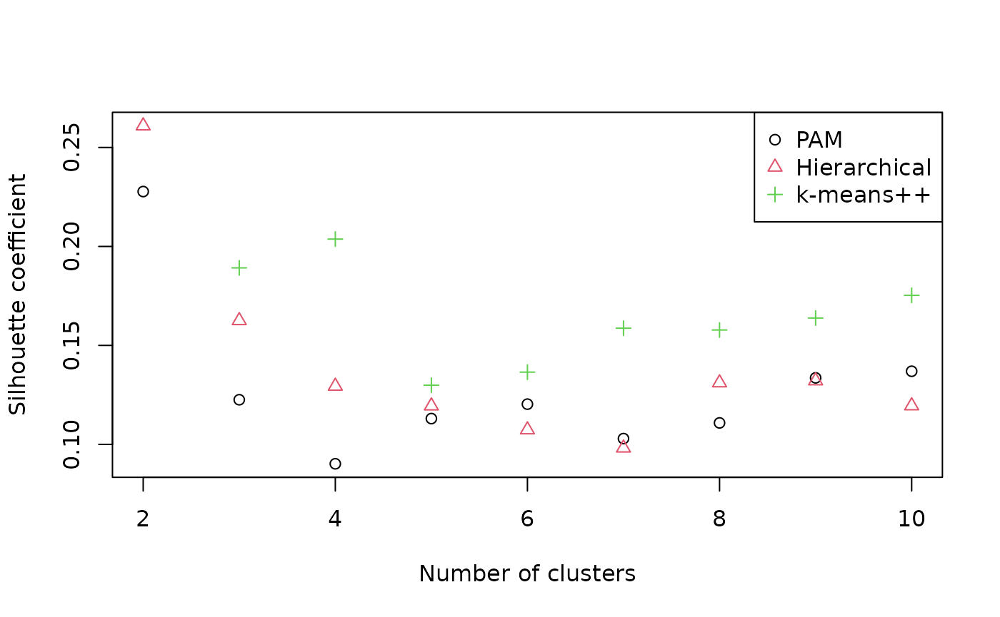
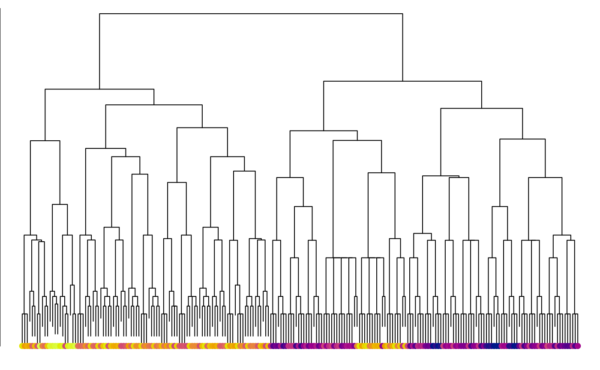
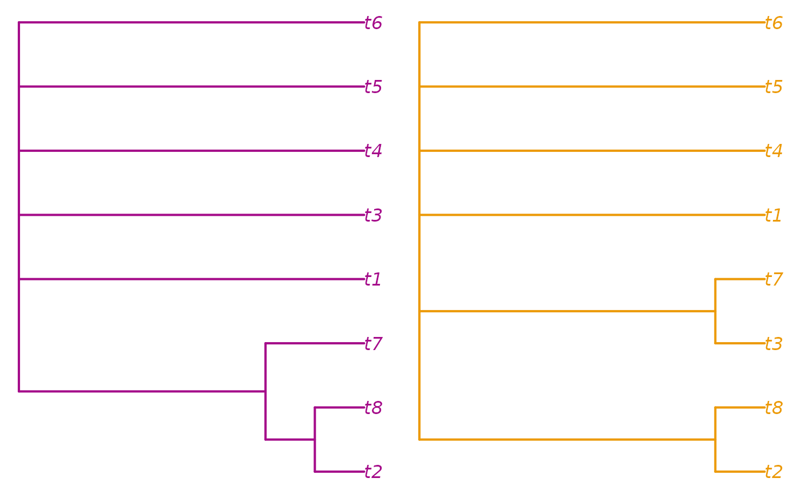
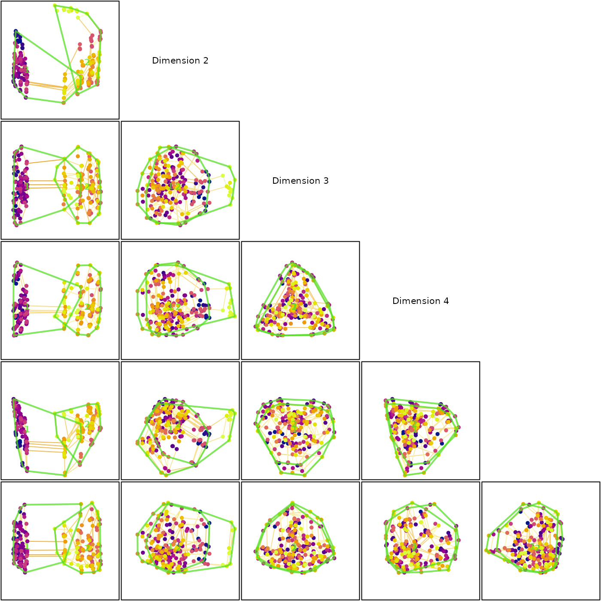

It can be instructive to visualize the distribution of trees by mapping their spatial relationships. This can be a helpful means to address whether discrete islands exist in a sample of trees, or whether analytical runs have converged. Such analysis is relatively simple to conduct, but a few common oversights can mislead interpretation.
Tree space analysis via user interface
Tree space mapping and analysis is made simple with the Shiny app included in the “TreeDist” R package. Simply install R or RStudio, then copy the code below into the R command line:
install.packages("TreeDist")
TreeDist::MapTrees()This will allow you to conduct and evaluate basic tree space mappings from tree lists saved in most common file formats; see an outline of the basic functionality. To avoid misinterpreting tree space, it’s worth having a broad idea of what an analysis involves, and some potential pitfalls.
Avoiding common pitfalls in tree space analysis
Here’s an example analysis of a series of 200 trees from an ordered
list. The list corresponds to a mixed-base representation of trees (see
TreeTools::as.TreeNumber()), so is expected to contain some
structure as we jump from one “class” of tree to another. Let’s see
whether we can visualize and corroborate this structure.
First we’ll generate the trees, and load some colours with which we might identify them.
library("TreeTools", quietly = TRUE)
treeNumbers <- c(1:220)
trees <- as.phylo(treeNumbers, 8)
spectrum <- hcl.colors(220, "plasma")
treeCols <- spectrum[treeNumbers]Using a suitable distance metric
Now we need to calculate the distance between each pair of trees in our list. The choice of distance metric is important (M. R. Smith, 2022). The widely used Robinson–Foulds distance is, unfortunately, unsuitable for tree space analysis. The clustering information distance (M. R. Smith, 2020) is a reliable alternative that is fast to calculate:
library("TreeDist")
distances <- ClusteringInfoDistance(trees)The reader is encouraged to repeat the exercise with other distances:
distances <- RobinsonFoulds(trees)
distances <- PhylogeneticInfoDistance(trees)
distances <- as.dist(Quartet::QuartetDivergence(
Quartet::ManyToManyQuartetAgreement(trees), similarity = FALSE))Mapping distances
Then we need to reduce the dimensionality of these distances. We’ll start out with a 12-dimensional mapping; if needed, we can always drop higher dimensions.
Principal coordinates analysis is quick and performs very well:
mapping <- cmdscale(distances, k = 12)Alternative mapping methods do exist, and sometimes give slightly
better mappings. isoMDS() performs non-metric
multidimensional scaling (MDS) with the Kruskal-1 stress function (Kruskal, 1964):
kruskal <- MASS::isoMDS(distances, k = 12)
mapping <- kruskal$pointswhereas sammon(), one of many metric MDS methods, uses
Sammon’s stress function (Sammon,
1969):
sammon <- MASS::sammon(distances, k = 12)
mapping <- sammon$pointsThat’s a good start. It is tempting to plot the first two dimensions arising from this mapping and be done:
Identifying clusters
A quick visual inspection suggests at least two clusters, with the possibility of further subdivision of the brighter trees. But visual inspection can be highly misleading (M. R. Smith, 2022). We must take a statistical approach. A combination of partitioning around medoids and hierarchical clustering with minimax linkage will typically find a clustering solution that is close to optimal, if one exists (M. R. Smith, 2022); if suitably initialized, k-means++ clustering (Arthur & Vassilvitskii, 2007) can also be worthwhile.
possibleClusters <- 2:10
# Partitioning around medoids
pamClusters <- lapply(possibleClusters, function(k) cluster::pam(distances, k = k))
pamSils <- vapply(pamClusters, function(pamCluster) {
mean(cluster::silhouette(pamCluster)[, 3])
}, double(1))
bestPam <- which.max(pamSils)
pamSil <- pamSils[bestPam]
pamCluster <- pamClusters[[bestPam]]$cluster
# Hierarchical clustering
hTree <- protoclust(distances)
hClusters <- lapply(possibleClusters, function(k) cutree(hTree, k = k))
hSils <- vapply(hClusters, function(hCluster) {
mean(cluster::silhouette(hCluster, distances)[, 3])
}, double(1))
bestH <- which.max(hSils)
hSil <- hSils[bestH]
hCluster <- hClusters[[bestH]]
# k-means++ clustering
kClusters <- lapply(possibleClusters, function(k) KMeansPP(distances, k = k))
kSils <- vapply(kClusters, function(kCluster) {
mean(cluster::silhouette(kCluster$cluster, distances)[, 3])
}, double(1))
bestK <- which.max(kSils)
kSil <- kSils[bestK]
kCluster <- kClusters[[bestK]]$cluster
plot(pamSils ~ possibleClusters,
xlab = "Number of clusters", ylab = "Silhouette coefficient",
ylim = range(c(pamSils, hSils)))
points(hSils ~ possibleClusters, pch = 2, col = 2)
points(kSils ~ possibleClusters, pch = 3, col = 3)
legend("topright", c("PAM", "Hierarchical", "k-means++"),
pch = 1:3, col = 1:3)
Silhouette coefficients of < 0.25 suggest that structure is not meaningful; > 0.5 denotes good evidence of clustering, and > 0.7 strong evidence (Kaufman & Rousseeuw, 1990). The evidence for the visually apparent clustering is not as strong as it first appears. Let’s explore our two-cluster hierarchical clustering solution anyway.
nClusters <- 2
whichResult <- match(nClusters, possibleClusters)
cluster <- hClusters[[whichResult]]We can visualize the clustering solution as a tree:
class(hTree) <- "hclust"
par(mar = c(0, 0, 0, 0))
plot(hTree, labels = FALSE, main = "")
points(seq_along(trees), rep(1, length(trees)), pch = 16,
col = spectrum[hTree$order])
Another thing we may wish to do is to take the consensus of each cluster:
par(mfrow = c(1, 2), mar = rep(0.2, 4))
col1 <- spectrum[mean(treeNumbers[cluster == 1])]
col2 <- spectrum[mean(treeNumbers[cluster == 2])]
plot(consensus(trees[cluster == 1], p = 0.5),
edge.color = col1, edge.width = 2, tip.color = col1)
plot(consensus(trees[cluster == 2], p = 0.5),
edge.color = col2, edge.width = 2, tip.color = col2)
Here, we learn that the two clusters are distinguished by the
position of t7.
Identifying islands
Besides clustering, we can also define ‘islands’ in tree space that are separated by a ‘moat’, such that all trees on one island are separated from all trees on another by at least a certain distance (Silva & Wilkinson, 2021).
par(mar = rep(0, 4))
# set a threshold corresponding to the width of the "moat" between islands
threshold <- 1.8
island <- Islands(distances, threshold)
# See how many trees are on each island
table(island)## island
## 1 2 3 4 5 6 7 8 9 10 11 12 13 14 15 16 17 18 19 20 21 22 23 24 25 26
## 89 3 3 3 3 3 3 3 3 3 3 57 1 1 3 2 1 1 3 1 1 3 1 3 3 3
## 27 28 29 30 31 32 33 34 35 36
## 3 3 1 1 1 1 2 3 1 1
# Let's ignore the small islands for now
largeIsle <- Islands(distances, threshold, smallest = 5)
# Colour trees according to their island
plot(mapping,
asp = 1, # Preserve aspect ratio - do not distort distances
ann = FALSE, axes = FALSE, # Don't label axes: dimensions are meaningless
col = ifelse(is.na(largeIsle), "grey", largeIsle + 1),
pch = 16
)Let’s view the consensus of each large island cluster:
par(mfrow = c(1, 2), mar = rep(0.2, 4))
plot(consensus(trees[!is.na(largeIsle) & largeIsle == 1], p = 0.5),
edge.color = 2, edge.width = 2, tip.color = 2)
plot(consensus(trees[!is.na(largeIsle) & largeIsle == 2], p = 0.5),
edge.color = 3, edge.width = 2, tip.color = 3)
Validating a mapping
Now let’s evaluate whether our map of tree space is representative. First we want to know how many dimensions are necessary to adequately represent the true distances between trees. We hope for a trustworthiness × continuity score of > 0.9 for a usable mapping, or > 0.95 for a good one.
txc <- vapply(seq_len(ncol(mapping)), function(k) {
newDist <- dist(mapping[, seq_len(k)])
MappingQuality(distances, newDist, 10)["TxC"]
}, 0)
plot(txc, xlab = "Dimension")
abline(h = 0.9, lty = 2)
We are going to need at least five dimensions to adequately represent the distances between trees.
To help establish visually what structures are more likely to be genuine, we might also choose to calculate a minimum spanning tree:
mstEnds <- MSTEdges(distances)Let’s plot the first five dimensions of our tree space, highlighting the convex hulls of our clusters:
nDim <- which.max(txc > 0.9)
plotSeq <- matrix(0, nDim, nDim)
plotSeq[upper.tri(plotSeq)] <- seq_len(nDim * (nDim - 1) / 2)
plotSeq <- t(plotSeq[-nDim, -1])
plotSeq[nDim * 1:3] <- (nDim * (nDim - 1) / 2) + 1:3
layout(plotSeq)
par(mar = rep(0.1, 4))
for (i in 2:nDim) for (j in seq_len(i - 1)) {
# Set up blank plot
plot(mapping[, j], mapping[, i], ann = FALSE, axes = FALSE, frame.plot = TRUE,
type = "n", asp = 1, xlim = range(mapping), ylim = range(mapping))
# Plot MST
MSTSegments(mapping[, c(j, i)], mstEnds,
col = StrainCol(distances, mapping[, c(j, i)]))
# Add points
points(mapping[, j], mapping[, i], pch = 16, col = treeCols)
# Mark clusters
for (clI in unique(cluster)) {
inCluster <- cluster == clI
clusterX <- mapping[inCluster, j]
clusterY <- mapping[inCluster, i]
hull <- chull(clusterX, clusterY)
polygon(clusterX[hull], clusterY[hull], lty = 1, lwd = 2,
border = "#54de25bb")
text(mean(clusterX), mean(clusterY), clI, col = "#54de25bb", font = 2)
}
}
# Annotate dimensions
plot(0, 0, type = "n", ann = FALSE, axes = FALSE)
text(0, 0, "Dimension 2")
plot(0, 0, type = "n", ann = FALSE, axes = FALSE)
text(0, 0, "Dimension 3")
plot(0, 0, type = "n", ann = FALSE, axes = FALSE)
text(0, 0, "Dimension 4")
Our clusters, so distinct in dimension 1, overlap strongly in every other dimension. The fact that the minimum spanning tree moves between clusters also underlines the fact that they are not as well defined as they appear by eye.
Note that cluster membership, as well as the precise shape of tree space, is a function of the tree distance metric. The phylogenetic information distance recovers a different pair of clusters, which may not correspond to those that are most apparent from a simple visual inspection of the two-dimensional tree space plot:

Comparing cluster size
It is tempting to compare the size of clusters by calculating the area of convex hulls on a two-dimensional mapping. However, mapped areas do not necessarily correspond to true hypervolumes.
Accuracy may be improved by comparing higher dimensions of projections using the “hypervolume” package, though the same considerations apply (Blonder et al., 2018). Interpretation of overlap statistics is detailed in Mammola (2019).
hypervolumeInstalled <- requireNamespace("hypervolume", quietly = TRUE)
if (hypervolumeInstalled) {
library("hypervolume")
hv1 <- hypervolume_gaussian(pid_mapping[pid_cluster == 1, 1:3],
verbose = FALSE)
hv2 <- hypervolume_gaussian(pid_mapping[pid_cluster == 2, 1:3],
verbose = FALSE)
hv_dist <- hypervolume_distance(hv1, hv2)
capture.output(
hyperset <- hypervolume_set(hv1, hv2, verbose = FALSE,
check.memory = FALSE)
) -> XX_VerboseNotRespected
hv_overlap <- hypervolume_overlap_statistics(hyperset)
hv_dist
hv_overlap
} else {
print("Install the 'hypervolume' package to run this example")
}## jaccard sorensen frac_unique_1 frac_unique_2
## 0.02648093 0.05159556 0.94582792 0.95074700If the objective is to quantify the spread of different clusters, other metrics may be easier to interpret than the clusters’ hypervolume (e.g. T. J. Smith & Donoghue (2022)).
The divergence of outlying points can be measures using the sum of ranges:
SumOfRanges(pid_mapping, pid_cluster)## [1] 132.0758 127.3610The overall size of a cluster can be measured using the sum of variances, or the mean distance from the centroid or median:
SumOfVariances(pid_mapping, pid_cluster)## [1] 173.0981 176.8212
MeanCentroidDistance(pid_mapping, pid_cluster)## [1] 12.58064 12.80727
DistanceFromMedian(pid_mapping, pid_cluster)## [1] 13.42931 13.48348The density of points within a cluster can be measured using the mean nearest-neighbour distance or the mean minimum spanning tree edge length:
MeanNN(pid_mapping, pid_cluster)## [1] 4.676416 5.274230
MeanMSTEdge(pid_mapping, pid_cluster)## [1] 5.558778 5.804829Self-organizing maps
An alternative approach to visualizing tree space is to create emergent self-organizing maps (Kohonen, 1982; Thrun, Lerch, Lötsch, & Ultsch, 2016; Ultsch, 2003), which map high-dimensional data into two dimensions, then add a third dimension to indicate distance between data points: nearby points occur in valleys, and are separated by ridges from more distant data points.
umatrixInstalled <- requireNamespace("Umatrix", quietly = TRUE)
if (umatrixInstalled) {
map <- Umatrix::esomTrain(as.matrix(distances), Key = seq_along(trees),
Epochs = 5, # Increase for better results
Lines = 42,
Columns = 42,
Toroid = FALSE)
Umatrix::plotMatrix(Matrix = map$Umatrix,
Toroid = FALSE, FixedRatio = TRUE,
TransparentContours = FALSE, Clean = TRUE) +
ggplot2::geom_point(data = data.frame(x = map$BestMatches[, 3],
y = map$BestMatches[, 2]),
shape = 19, color = treeCols, size = 2)
} else {
message("Install the 'Umatrix' package to run this example")
}## [1] "Epoch: 1 started"
## [1] "Epoch: 1 finished. 220 datapoints changed bestmatch"
## [1] "Epoch: 2 started"
## [1] "Epoch: 2 finished. 216 datapoints changed bestmatch"
## [1] "Epoch: 3 started"
## [1] "Epoch: 3 finished. 212 datapoints changed bestmatch"
## [1] "Epoch: 4 started"
## [1] "Epoch: 4 finished. 203 datapoints changed bestmatch"
## [1] "Epoch: 5 started"
## [1] "Epoch: 5 finished. 165 datapoints changed bestmatch"
## [1] "---- Esom Training Finished ----"## Warning: `aes_string()` was deprecated in ggplot2 3.0.0.
## ℹ Please use tidy evaluation idioms with `aes()`.
## ℹ See also `vignette("ggplot2-in-packages")` for more information.
## ℹ The deprecated feature was likely used in the Umatrix package.
## Please report the issue to the authors.
## This warning is displayed once every 8 hours.
## Call `lifecycle::last_lifecycle_warnings()` to see where this warning was
## generated.## Warning: Using `size` aesthetic for lines was deprecated in ggplot2 3.4.0.
## ℹ Please use `linewidth` instead.
## ℹ The deprecated feature was likely used in the Umatrix package.
## Please report the issue to the authors.
## This warning is displayed once every 8 hours.
## Call `lifecycle::last_lifecycle_warnings()` to see where this warning was
## generated.
What next?
You may wish to:
Analyse landscapes of phylogenetic trees
Provide context for tree distances
Review available distance measures and the corresponding functions
Compare the distribution of different sets of trees